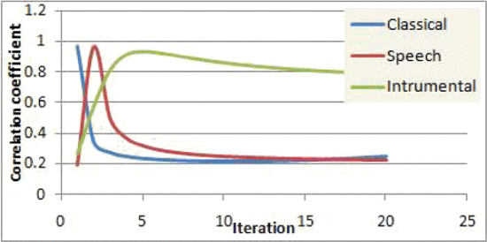

|
|
I am a researcher at NTT Communication Science Laboratories in NTT Corporation.
I obtained my PhD in 2018 from The University of Tokyo, Japan.
My general research interest lies in image processing and computer vision.
News
- One paper accepted to ACCV 2020. "Adaptive Spotting: Deep Reinforcement Object Search in 3D Point Clouds". [Paper]
- One paper accepted to ICPR 2020. "Translating Adult’s Focus of Attention to Elderly’s". [Paper]
- One journal paper accepted to MTAP 2020. "Computational attention model for children, adults and the elderly". [Slides]
- Presented demo of our work in NTT Open House 2020.. [English] [Japanese]
- One paper accepted to MIRU 2019 (Oral: 28.0%). "Deep Reinforcement Template Matching". [Slides]
- I have presented my work in SSII 2019. "Predicting Focus-of-Attnetion of Eldelry Drivers". [Flyer] [Poster]
- One paper accepted to IEEE ICASSP 2019. "Learning Search Path for Region-level Image Matching". [Paper]
- One paper accepted to 25TH International Conference on Noise and Fluctuations (ICNF 2019). [EasyChair]
- One paper accepted to IEEE ICIP 2018. "Billboard Saliency Detection in Street Videos for Adults and Elderly". [Paper]
- One paper accepted to IEEE ICASSP 2018. "Signboard Saliency Detection in Street Videos". [Paper]
- One paper accepted to PLOS ONE 2018. "Gaze distribution analysis and saliency prediction across age groups". [paper]
- One paper accepted to ACMMM 2017 for Demo. "MatPlanner: Plan Your Days in Conferences by Resolving Conflicting Events". [Paper] [Video]
- One paper accepted to ACM Symposium on Applied Perception (SAP 2017). "Age-adapted Saliency Model with Depth Bias". [Paper]
- One paper accepted to Human Vision and Electronic Imaging (HVEI 2017). [Paper]
Publications
 |
Adaptive Spotting: Deep Reinforcement Object Search in 3D Point Clouds |
||
Translating Adult’s Focus of Attention to Elderly’s |
|||
Deep Reinforcement Template Matching |
|||
 |
Learning Search Path for Region-level Image Matching |
||
 |
Billboard Saliency Detection in Street Videos for Adults and Elderly |
||
 |
Signboard Saliency Detection in Street Videos |
||
 |
Gaze Distribution Analysis and Saliency Prediction Across Age Groups |
||
 |
MatPlanner: Plan Your Days in Conferences by Resolving Conflicting Events |
||
Age-adapted Saliency Model with Depth Bias |
|||
Developmental Changes in Ambient and Focal Visual Processing Strategies |
|||
Noise Induced Segmentation of Noisy Color Image |
|||
Dynamic stochastic resonance-based watermark extraction from audio signals in SVD domain |
|||
Dynamic stochastic resonance-based improved watermark extraction in DWT-SVD domain |
|||
|  | Dynamic stochastic resonance-based improved watermark extraction from audio signal |
COLLABORATIONS AND TALKS
- Visiting Student at Dept. of Brain and Cognitive Sciences MIT, Cambridge, MA
- Visiting Researcher at Laboratoire Psychologie de la Perception Paris Descartes University, CNRS, Paris, France
- Researcher Internship at Yokohama Research Lab Hitachi Ltd., Yokohama, Japan
- Invited talk at Berkeley Artificial Intelligence Research Lab on March 2018.
- Gave talk on Computational Aspect of Visual perception at Dept. of Brain and Cognitive Sciences, MIT, Cambridge, MA on Feb. 2017.
Grants
- MONBUKAGAKUSHO, Ministry of Education, Culture, Sports, Science, and Technology (MEXT), Japan (for 4 years)
- MHRD, Ministry of Human Resource Development, Government of India (for 2 years)
- JENESYS programme, Industrial visit was fully supportedby Japan Government (for 2 months)
- Takuetsu-daigakuin, The University of Tokyo, Japan (for a month)
EXTRA-CURRICULAR ACTIVITIES
- Vice president of The University of Tokyo Indian Student Association (UTISA)
- Reviewer of TPAMI, CVIU, ICIP, MTAP, CVA, ICPR, MVA, ...